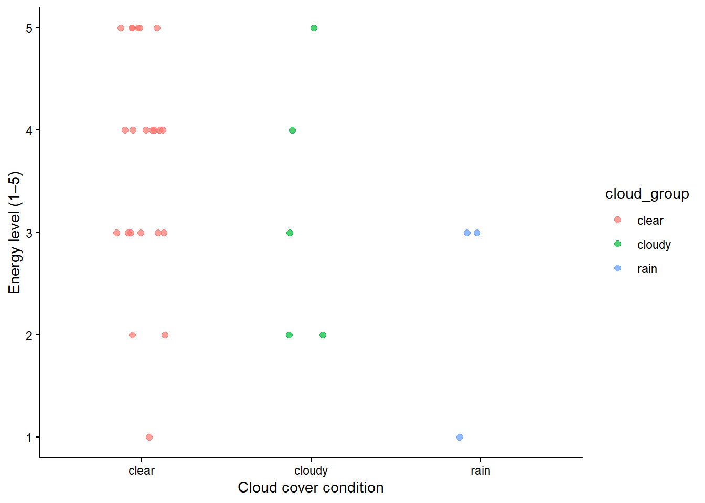

library(tidyverse)
library(janitor)
library(forcats)
library(here)Final
GitHub repository: ENVS-193DS_winter-2026_final
Set Up
Problem 1. Research writing
a. Transparent Statisitcal Methods
In part 1, they used a simple linear regression because they tested whether precipitation predicts flooded wetland area. In part 2, they used a Kruskal–Wallis rank-sum test because they tested whether median flooded wetland area differs across five water year classification groups.
b. Figure Needed
A good figure for part 2 would be a box plot with water year classification on the x-axis and flooded wetland area on the y-axis. I think this would be the best choice because it makes it easy to compare the median flooded wetland area across all five groups and also shows how spread out the data are in each one. I would also add the individual data points so it is easier to see the variation and overlap between groups.
c. Suggestions for Rewriting
Precipitation did not significantly predict flooded wetland area in the San Joaquin River Delta. This result was based on a simple linear regression (test statistic = not provided, distribution = not provided, degrees of freedom = not provided, p = 0.11, α = significance level not provided).
Median flooded wetland area also did not differ significantly across water year classifications. This result was based on a Kruskal-Wallis rank-sum test comparing wet, above normal, below normal, dry, and critical drought years (test statistic = not provided, distribution = chi-squared, degrees of freedom = 4, p = 0.12, α = significance level not provided).
d. Interpretation
One additional variable that could influence flooded wetland area is median daily Delta outflow during the spring management period. This would be a continuous variable, and it could affect flooded wetland area because the paper found flooded wetland area was weakly correlated with Delta outflow during a key time for wetland water management.
Problem 2. Data Visualization
a. Cleaning and Summarizing
kelp <- read_csv(here("data", "kelp_data.csv"))kelp_clean <- kelp |>
clean_names() |>
# cleans the column names
filter(site %in% c("IVEE", "NAPL", "CARP")) |>
# keeps only the three sites of interest
mutate(site_name = case_when(
site == "NAPL" ~ "Naples",
site == "IVEE" ~ "Isla Vista",
site == "CARP" ~ "Carpinteria"
)) |>
# creates a new column with full site names
mutate(site_name = as_factor(site_name),
site_name = fct_relevel(site_name, "Naples", "Isla Vista", "Carpinteria")) |>
# makes site_name a factor and sets the order
filter(!(date == "2000-09-22" & transect == "6" & quad == "40")) |>
# removes the flagged incorrect observation
group_by(site_name, year) |>
# groups the data by site and year
summarize(mean_fronds = mean(fronds)) |>
# calculates the mean fronds for each site-year combination
ungroup()
# removes groupingslice_sample(kelp_clean, n = 5)# A tibble: 5 × 3
site_name year mean_fronds
<fct> <dbl> <dbl>
1 Isla Vista 2006 11.6
2 Isla Vista 2005 18.9
3 Naples 2007 17.2
4 Isla Vista 2008 39.4
5 Carpinteria 2001 4.42str(kelp_clean)tibble [77 × 3] (S3: tbl_df/tbl/data.frame)
$ site_name : Factor w/ 3 levels "Naples","Isla Vista",..: 1 1 1 1 1 1 1 1 1 1 ...
$ year : num [1:77] 2000 2001 2002 2003 2004 ...
$ mean_fronds: num [1:77] 1.8947 0.0606 3.0111 9.2596 7.8141 ...b. Understanding the Data
The observation from 2000-09-22 in transect 6 and quad 40 is filtered out because the fronds value is -99999, which is a missing-data code rather than a real measurement. In this dataset, FRONDS represents the number of giant kelp fronds greater than 1 meter tall, and for this row the value appears because the datasheet was missing, so it should not be treated as an actual frond count.
c. Visualize the Data
ggplot(kelp_clean, aes(x = year, y = mean_fronds, color = site_name)) +
geom_line(linewidth = 0.7) +
geom_point(size = 2) +
scale_color_manual(
name = "Site",
values = c(
"Naples" = "#157A76",
"Isla Vista" = "#8E7767",
"Carpinteria" = "#5E776F"
)
) +
scale_x_continuous(breaks = seq(2000, 2025, by = 5)) +
labs(
title = "Sites vary in mean kelp fronds per year",
x = "Year",
y = "Mean kelp fronds per year"
) +
theme_minimal(base_family = "sans") +
theme(
plot.title = element_text(hjust = 0.5),
panel.border = element_blank(),
legend.position = "right"
)
d.
The figure shows that mean kelp fronds vary across both year and site. Isla Vista tends to have the highest values and the biggest changes over time, while Naples and Carpinteria are usually lower. Overall, the plot suggests that kelp abundance is not constant and differs depending on location and year.
Problem 3. Data Analysis
Set up
mopl <- read_csv(here("data", "MOPL_nest-site_selection_Duchardt_et_al._2019.csv"))Rows: 276 Columns: 34
── Column specification ────────────────────────────────────────────────────────
Delimiter: ","
chr (2): ID, name
dbl (32): year, bare1, bare2, br1, br2, af1, af2, pf1, pf2, c3p1, c3p2, c4p1...
ℹ Use `spec()` to retrieve the full column specification for this data.
ℹ Specify the column types or set `show_col_types = FALSE` to quiet this message.a. Response Varirables
In this data set, a value of 1 means the location was a nest site that was used by a Mountain Plover, and a value of 0 means the location was an available site that was not used for nesting. Biologically, the response variable represents nest-site use, or whether a Mountain Plover selected that location for nesting.
b.
vo_nest is a continuous variable because it is measured numerically. As visual obstruction increases, the probability of Mountain Plover nest-site use would probably decrease because plovers tend to choose open nesting habitat with shorter and less dense vegetation. I found this in the Introduction where the paper says Mountain Plovers typically breed in areas with extensive bare ground and short, sparse vegetation, and in the Nest-Site Selection methods where visual obstruction was included as a habitat variable.
edgedist is a continuous variable because it measures distance to the prairie dog colony edge. As distance to colony edge increases, the probability of nest-site use would probably decrease because the paper suggests plovers are more likely to use areas closer to colony edges than deep colony cores. I found this in the Discussion where the authors say probability of site use declined near the cores of large colonies and that distance to colony edge was a strong driver of plover presence.